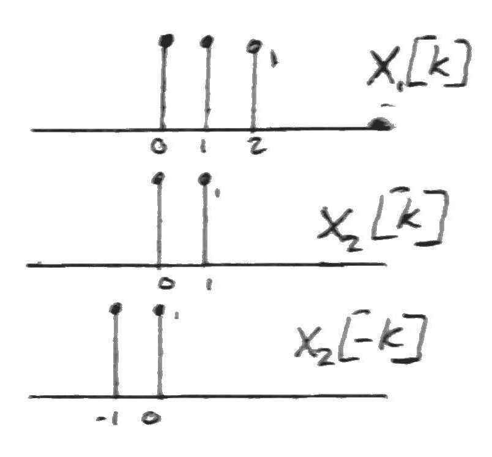
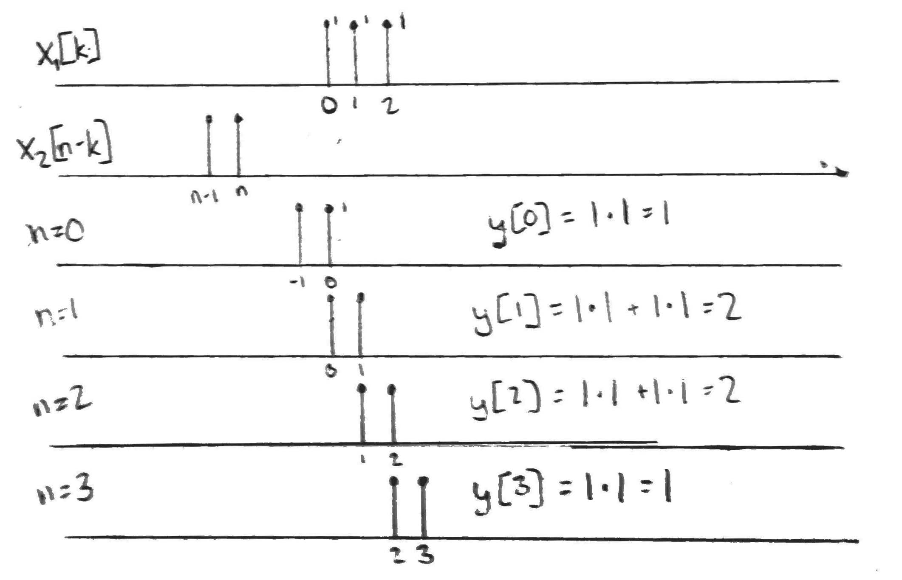

Lecture 6 - Notes
January 15, 2016
Administrative
Assignment 1
- 2.7) Complex exponentials are periodic if $\frac{\omega_0}{2 \pi}$ is rational
- 2.28) We are asked with limited information about a system
- b) Create a linear combination of the input signals that it is the 0 constant signal, i.e., the input is always 0. Check wether the output is 0 or not.
- c,d) Create linear combinations of the input signals and their time shifted versions.
Other
- Will be out of class, Dr. Sima will be substituting
- Assignment 2 will be posted Monday
Linear Time Invariant Systems --- Continued
What do we need to know about an LTI system to compute its response to any input signal? In a general way we can represent a discreet signal as,
We know that $h[n]$ (the response to $\delta[n]$), if the system is Linear,
so,
where $*$ is the convolution operation.
Convolution in Discreet Time
First Method
The first method is called scale, shift, stack and add. Given,
We start by sketching $x_1[n]$ and $x_2[n]$, for each discreet signal $p$ in $x_1$ we sum them,
Second Method
This is the flip, shift, multiply and add method. This is the discreet time version of the continuous time method of convolution. It computes the are of overlap between one signal and the flipped and shifted version of the other signal. Given $x_1[n]$ and $x_2[n]$,
- Draw $x_1[k]$ and $x_2[-k]$

- Slide $x_2[n-k]$ through $x_1[k]$ and calculate the areas

Third Method
This is the analytical method for solving the convolution. Given,
so,
note that $u[k] = 0$ for all $k \lt 0$ and $u[n-k] = 0$ for all $0 \le n \lt k$, so,